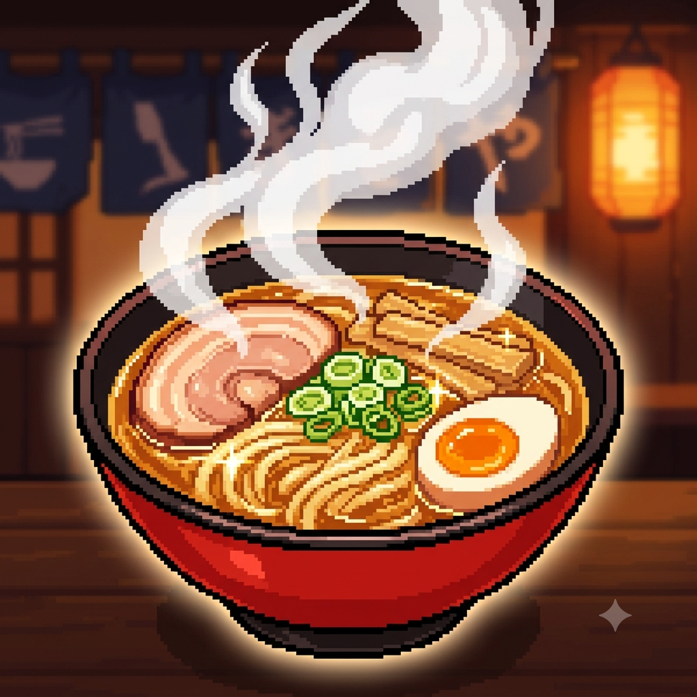

Meu primeiro post
Por: Isabelle Duenha
Boas-vindas ao meu novo blog! Aqui vou compartilhar curiosidades e novidades sobre animes e seus personagens.
Vou compartilhar conhecimentos sobre animes e personagens
Por: Isabelle Duenha
Boas-vindas ao meu novo blog! Aqui vou compartilhar curiosidades e novidades sobre animes e seus personagens.

Por: Isabelle Duenha
Não é só ação ou fantasia: são as histórias, os laços e os sentimentos que ficam com a gente. Cada obra traz lições, emoções e personagens que parecem fazer parte da nossa jornada.

Por: Isabelle Duenha
Você sabia que o criador de Naruto, Masashi Kishimoto, inicialmente não planejava que o Kakashi usasse uma máscara por mistério, mas sim porque achava que isso combinava com o visual de um ninja de elite?
Com o tempo, ele percebeu que revelar o rosto do personagem seria um problema, já que a curiosidade dos fãs tinha crescido demais. Por causa disso, o mistério se tornou uma das piadas mais icônicas de toda a história dos animes!

Por: Isabelle Duenha
Se você já ficou com água na boca vendo um simples prato de lamen em um anime, saiba que você não está sozinho.
Os estúdios de animação japoneses levam a comida super a sério e usam técnicas visuais de ponta para nos deixar famintos. Eles exageram propositalmente no brilho dos alimentos, na densidade do vapor que sai do prato e até no som da mastigação para ativar a nossa memória afetiva.
Além disso, na cultura japonesa, compartilhar uma refeição é um símbolo máximo de conexão e amizade entre os personagens. Então, aquela cena do banquete não está ali só para encher linguiça; ela serve para fazer você se sentir parte daquela família!

Por: Isabelle Duenha
Se você curte animes de luta, com certeza já reparou que ninguém solta um golpe em silêncio. Falar o nome da técnica em voz alta é um clássico que vem diretamente dos mangá.
Como os quadrinhos são estáticos, os autores precisavam de um jeito claro para o leitor identificar qual habilidade estava sendo usada. Quando a história vai para a TV, os estúdios mantêm essa tradição não só para respeitar a obra original, mas também para aumentar o drama, dar ritmo para as cenas de ação e criar aquele momento marcante que todo mundo adora imitar.

Por: Isabelle Duenha
Quem nunca viu o Goku ou o Luffy devorando uma montanha de comida em segundos e se perguntou para onde vai tudo aquilo? Nos animes, o apetite de um personagem é um símbolo visual clássico de energia vital e força.
Como esses heróis gastam uma quantidade absurda de calorias treinando e salvando o mundo, a gula virou uma forma divertida dos autores mostrarem a resistência e o poder ilimitado deles. Além disso, ver um protagonista comendo feito louco humaniza o herói e garante ótimas cenas de alívio cômico entre uma batalha e outra.